内容要点
一段 9 分 18 秒的达芬奇三大色轮对比课，讲透一级校色轮、log色轮、HDR色轮的设计逻辑与应用场景：①一级校色轮=最基础最重要：四部分（亮部/中灰/暗部/偏移），偏移=全局均匀调整；亮中暗三区联动渐变（调亮部→高光最明显+中灰暗部连带渐变）；效果线性过渡自然，使用频率最高，用于还原log/矫正曝光/塑造影调/建立对比度/基础染色。②log色轮=影调隔离：高光/中间调/阴影三区独立互不牵连（调高光只影响最亮区域，暗部中间调保持原状）；染色同理精准可控；警示=幅度过大会破坏影调平滑过渡造成断层。③HDR色轮=最精细最强大：不限于HDR素材，光影复杂画面更好用；七分区（global/镜面高光/高光/亮部=主体肤色/阴影=体积感关键/暗部/黑场）；功能参数=左上圆形按钮查看影响区、左右滑块=选区柔化范围、下方单独调曝光饱和度、XY轴精准定位色相饱和度；global色轮左滑块=色温（上黄下蓝）右滑块=色调（上红下绿）。④实战对比：一级还原（太阳过曝）→一级高光压下中灰跟着变闷→log高光单独压回过曝太阳+中灰暗部不变→HDR highlight上提只有太阳核心提亮云层保留。⑤染色对比：高光染红=一级全球偏红/log云层高光偏红/HDR只有最亮高光点精确变红；暗部染绿同理（一级全画面/ log暗部大部分/ HDR范围更窄更集中）。总结：整体控制→影调隔离→像素级精度=调色思维升级。
知识结构
一级校色轮/log色轮/HDR色轮，搞清区别与时机。
四部分：亮部/中灰/暗部/偏移；三区联动渐变+全局均匀。
高光/中间调/阴影三区独立隔离互不牵连。
精准可控；幅度过大破坏平滑过渡造成断层。
global/镜面高光/高光/亮部/阴影/暗部/黑场。
圆形按钮/左右滑块柔化/曝光饱和度/XY轴/global色温色调。
线性全局关联适合大范围调整；还原后发现太阳过曝。
一级压下中灰跟着变闷；log单独压回过曝+中灰暗部不变。
highlight上提只有太阳核心提亮，云层细节保留。
一级全球偏红/log云层高光/HDR只有最亮高光点。
一级全画面/log暗部大部分/HDR范围更窄更集中。
达芬奇三大色轮=三种控制粒度。①一级校色轮（四部分：亮部/中灰/暗部/偏移）：偏移=全局均匀调整；亮中暗三区联动渐变（调亮部高光最明显+中灰暗部连带渐变），效果线性过渡自然，用于还原log/矫正曝光/塑造影调/建立对比度/基础染色。②log色轮：高光/中间调/阴影三区独立隔离互不牵连（调高光只影响最亮区域），染色精准可控，但幅度过大会破坏影调平滑过渡造成断层。③HDR色轮=七分区（global/镜面高光/高光/亮部=主体肤色/阴影=体积感/暗部/黑场），不限于HDR素材；参数=圆形按钮查看影响区、左右滑块选区柔化、下方调曝光饱和度、XY轴定位色相饱和度；global左滑块色温（上黄下蓝）右滑块色调（上红下绿）。选轮心法：大范围整体调整用一级、要隔离影调用log、像素级精调用HDR——整体控制→影调隔离→像素级精度=调色思维升级。
00:00-02:10一级校色轮：全局联动
总览：「今天我们学调色的三大色轮。面对一级校色轮、log色轮和hdr色轮，许多同学仍然会困惑他们到底有什么区别，又该在什么时候去使用。」
四部分：「一级校色轮通常包括四个部分：亮部色轮、中灰色轮、暗部色轮和偏移色轮。偏移色轮负责全局调整，当你向右拖动它时整个画面的亮度会整体提升，向左拖动会整体变暗，为他添加颜色时这种染色效果也会均匀的影响画面的每一个部分。」
三区联动：「亮部、中灰、暗部色轮则用于分区控制，但三者之间存在相互关联的影响。当你调整亮部色轮的亮度时，画面高光区域的变化最明显，但中灰和暗部区域的亮度也会随之发生渐变式的连带变化。例如当你用一级校色轮为亮部增加红色时，高光区域的改变最为明显，同时红色也会自然的向中灰和暗部区域渗透，只是影响程度会依次减弱。」
用途：「一级校色轮的调整范围非常宽广，它的效果线性且过渡自然，这也让他成为达芬奇中使用频率最高的工具之一，常用于初步还原log素材、矫正曝光、塑造明暗影调、建立对比度以及画面进行基础染色。」

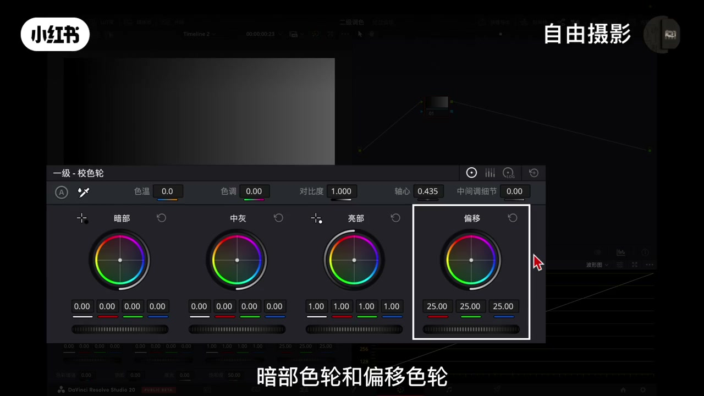

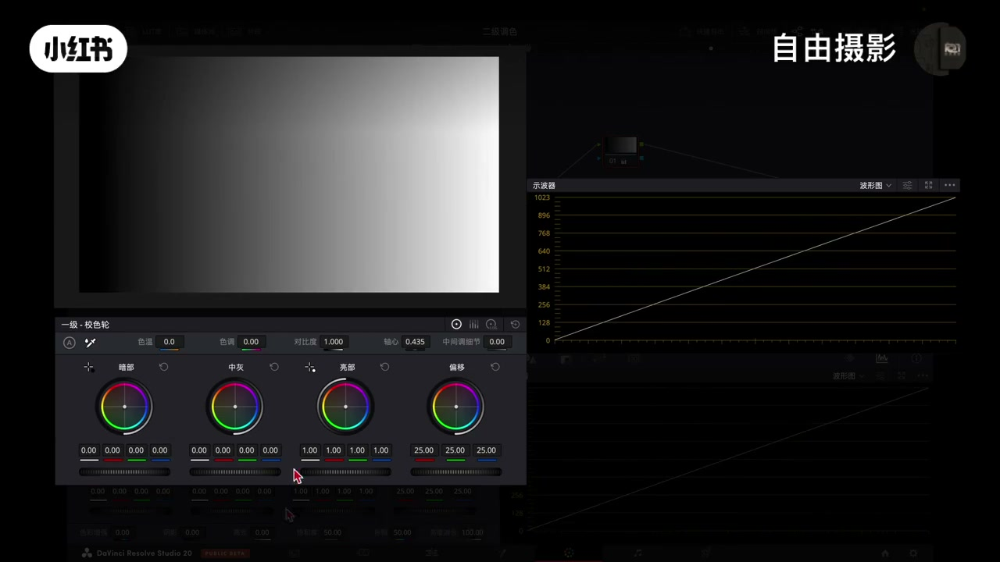
02:10-04:25log色轮：影调隔离
独立逻辑：「log色轮同样包含高光、中间调、阴影和偏移色轮，除了偏移色轮负责全局调整外，其他三个色轮在调整逻辑上与一级校色轮有显著不同。当你调整高光色轮时，它的影响会非常集中的作用在画面中最亮的区域，这种调整对于暗部和中间调的影响被极大的隔离了，他们基本会保持原状。同理调整中间调主要改变中间亮度范围，高光和阴影保持相对稳定；调整阴影能够精准改变暗部区域，中间调和高光受到的影响微乎其微。」
染色对应：「将高光色轮向红色方向拖动，主要调整的是高光区域会染上红色；将中间调色轮向红色拖动，影响集中在中间调画面区域；将阴影色轮向红色拖动，那么效果主要调整的是暗部。」
警示：「在实际使用中log色轮相比一级校色轮能实现更精准可控的调整，但需要注意的是，如果调整幅度过大，会破坏影调间的平滑过渡，导致色彩或亮度断层使画面显得不自然。」
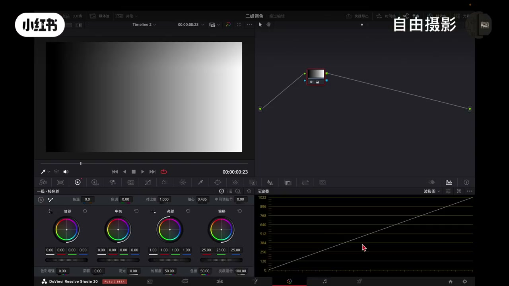
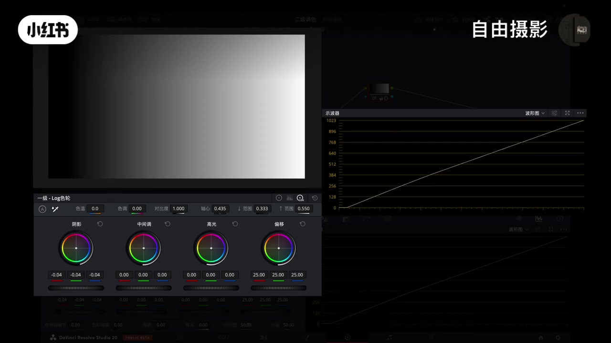
04:25-06:45HDR色轮：像素级精度
适用性：「很多人会误以为他只能用一HDR素材，其实不然，他能出色的处理任何类型的画面，尤其在光影层次复杂时更能发挥他的价值。」
七分区：「它的核心是一套超级分区系统，将影调精细的划分为七个色轮，从右到左：第一个色轮是global用于整体调整；specular镜面高光控制最刺眼的极亮光如光源、金属反光；highlight高光控制标准的高光如被照亮的墙面；light亮部控制中间调偏亮的部分常影响主体肤色；shadow阴影控制中间调偏暗的部分是塑造物体体积感的关键；暗部控制暗部区域但比black稍亮；black黑场控制画面中最深的黑色如阴影深处。」
功能参数：「每个色轮都附带功能参数。首先你可以在左上角按住圆形按钮查看色轮对画面的影响。左侧滑块是影响画面选区范围的下限，右侧滑块是上限，你可以直观的把它理解为对选区范围的柔化程度。接着在色轮下方可以单独调整这个区域的曝光与饱和度，而不会影响画面其他色彩。最后色轮底部的参数XY轴用于在色轮内精准定位色相与饱和度。」
global色轮：「在global色轮左侧滑块影响的是色温，向上滑动偏黄，向下滑动偏蓝；右侧滑块影响的是色调，向上滑动偏红，向下滑动偏绿。色轮下方用于整体的明暗曝光与饱和度调整。」

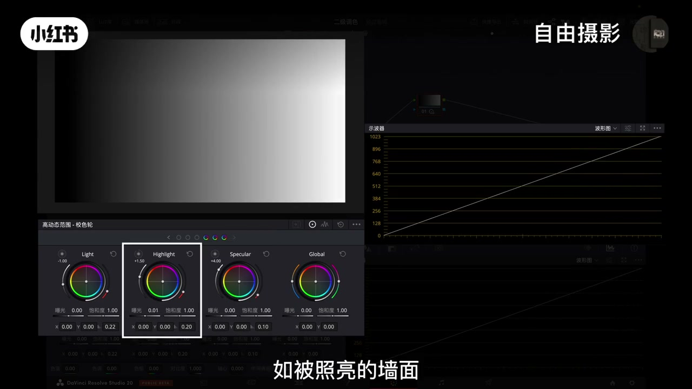
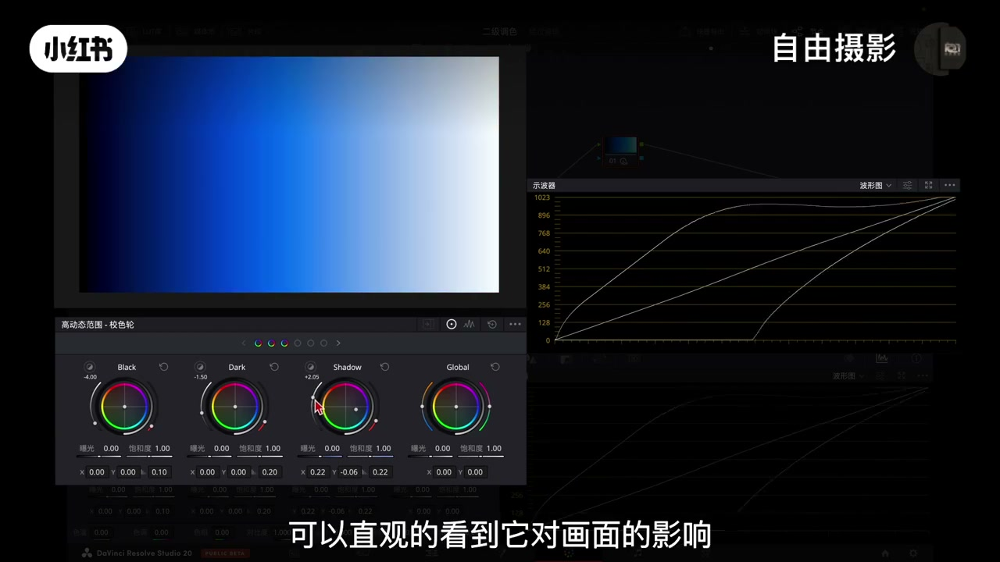
06:45-08:40实战：三种粒度选轮
一级还原：「我们用一级校色轮来还原一下画面，大家注意看示波器，当提亮高光时中灰和暗部会连带变化，压暗暗部时中灰和高光同样会受影响，这就是它线性全局关联的特点，适合做大范围集体调整。还原后注意看波形，我们发现画面的高光区域比如太阳已经过曝了。」
一级局限：「新建一个节点，如果我尝试用一级校色轮的高光色轮单独往下压，效果并不理想，因为中灰区域也会跟着被压暗，导致整个画面风格变闷变暗。」
log救场：「我们切换到log色轮，用它的高光色轮单独往下压，大家可以看到过曝的太阳和云层的高光就被压回来了，而关键点在于画面的中灰和暗部几乎不受影响，这就保住了整体的曝光基础。」
HDR精调：「我们想要只给这部分最亮的高光增加一点通透感，使用HDR色轮，选中highlight的高光色轮稍微向上提亮，只有太阳核心及最亮的部分被提亮了，而旁边稍暗的云层细节完全不受影响。我们还可以拖动色轮旁边的滑块进一步柔化、控制选区范围。选区精准了，无论是修复问题还是做风格化都会显得非常简单。」
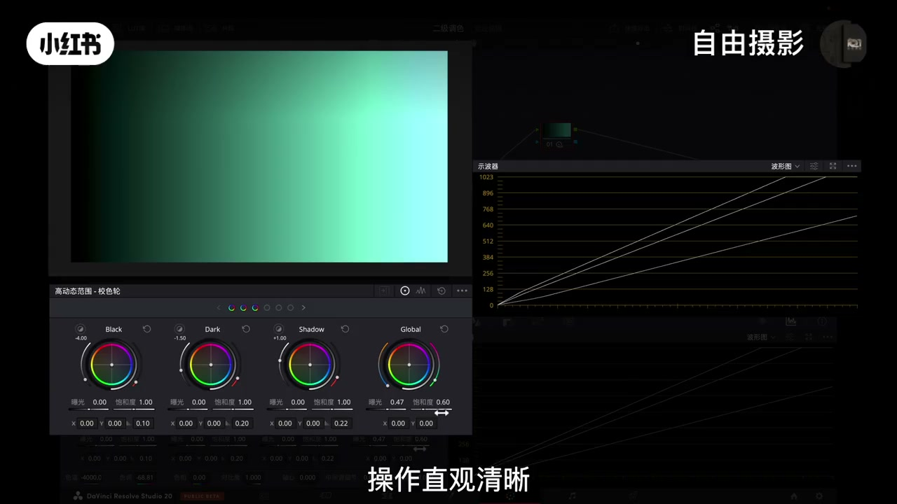
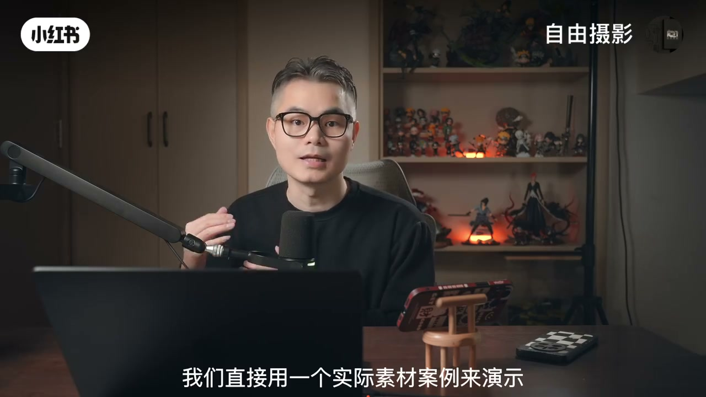

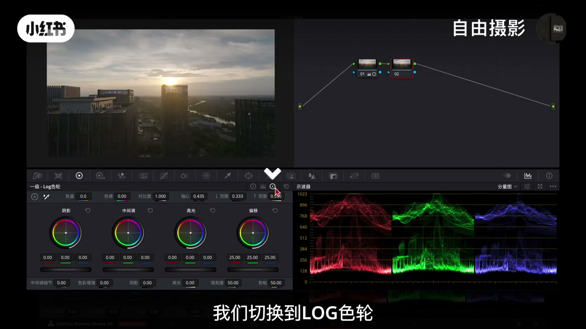
08:40-09:18染色对比+总结
高光染红：「先用一级校色轮染色，将高光色轮往红色拉，整个画面从高光到暗部都会整体偏红，变化是全球性的。log色轮染色将高光色轮往红色拉，主要是云层和高光区域会偏红，对中间调影响较小，它的控制范围还是属于小部分区域而非一个精确的点。HDR色轮染色将highlight高光色轮往红色拉，只有最亮的高光点如太阳边缘会精确的变红，旁边的云层颜色完全不变。」
暗部染绿：「同样的逻辑，我们将暗部区域染绿来直观对比一下三组色轮的效果。一级色轮，整个画面的暗部、中灰和高光整体偏绿；log色轮可以看到暗部大部分区域变绿了，但中间调与亮部还是保持相对稳定；HDR色轮效果会精准的作用在典型的更暗区域，不过范围更窄也更集中。」
总结：「从一级校色轮的整体控制到log色轮的影调隔离再到HDR色轮的像素级精度，这不仅是工具的切换，更是一种调色思维的升级。下节课我们将继续解锁同样强大的色彩扭曲器。」
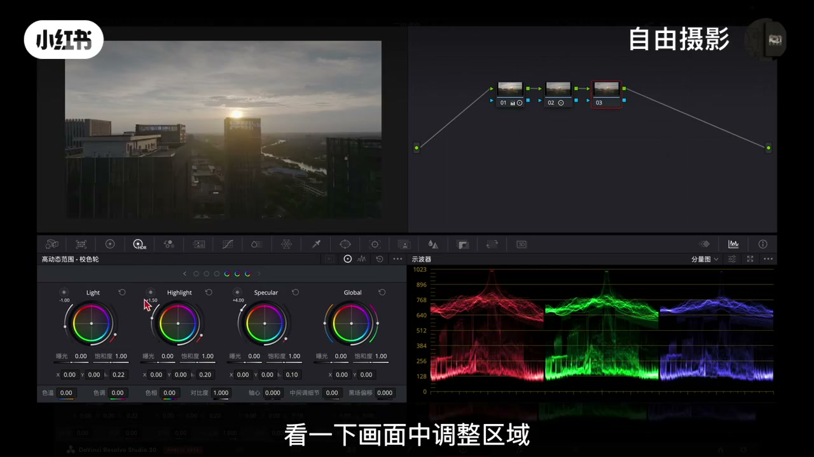
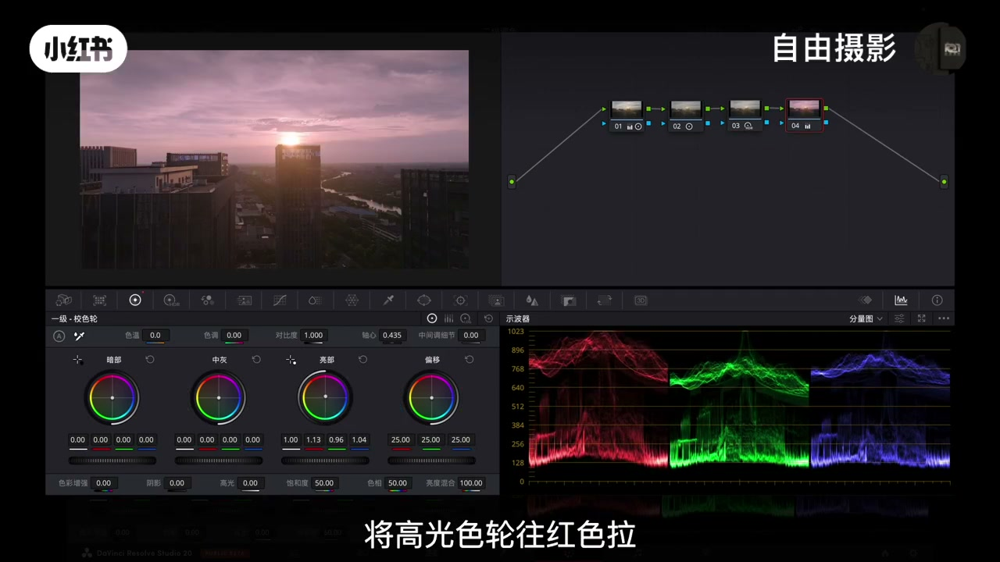
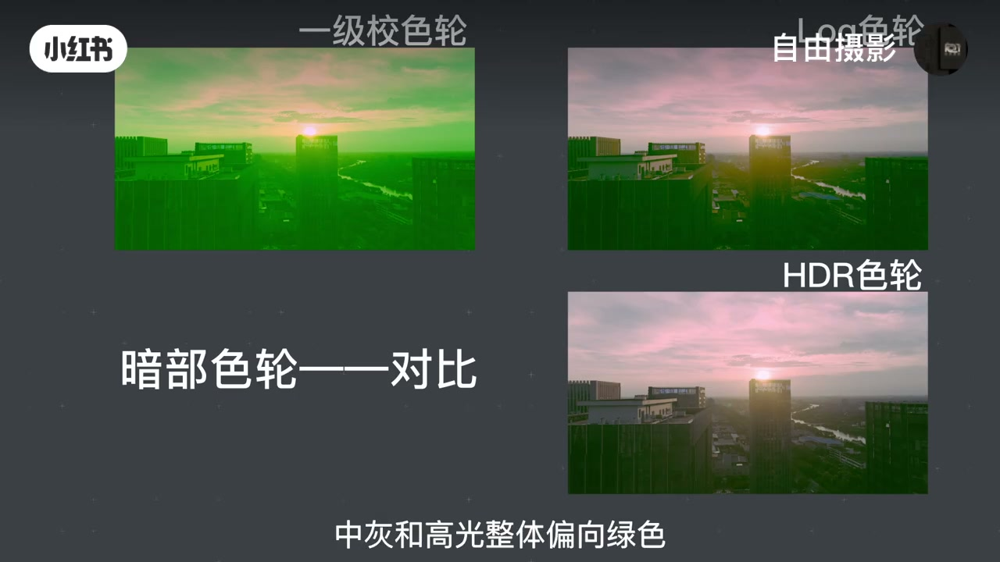

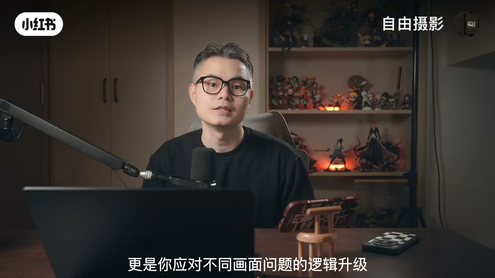
完整转录（86段）
以下文本由 Whisper medium 模型自动转录，可能存在少量识别误差，已尽可能修正。
今天我们学调色的三大色轮
在达芬吉调色面板中 色轮是最核心的攻击之一 虽然你可能已经对它有所了解 但面对一级叫色轮
log色轮和hdr色轮 许多同学仍然会困惑他们到底有什么区别
又该在什么时候去使用 今天我们通过原理讲解和实战对比 一致性为你彻底理解他们的设计逻辑
核心差异与应用场景 让你在今后调色时能毫不犹豫的选出最正确的那个
首先 我们来详细讲解最基础也最重要的一级叫色轮 一级叫色轮通常包括四个部分
亮部色轮 中灰色轮 暗部色轮和偏移色轮
偏移色轮负责全级调整 当你向右拖动它时 整个画面的亮度会整体提升
向左拖动会整体变暗 为他添加颜色时 这种染色效果也会均匀的影响画面的每一个部分
亮部 中灰 暗部色轮则用于分区控制 但三者之间存在相互关联的影响
当你调整亮部色轮的亮度时 画面高光区域的变化最明显
但中灰和暗部区域的亮度也会随之发生渐变式的连带变化
调整中灰色轮时 中间调受影响最大 同时亮部和暗部也会产生一定程度的过度变化
调整暗部色轮时 阴影区域变化最明显 中灰和亮部同样会受到影响 当然你用色轮染色也是同样的道理
例如 当你用一级轿车轮为亮部增加红色时 高光区域的改变最为明显
同时 红色也会自然的向中灰和暗部区域渗透 只是影响程度会依次减弱
同理 用中灰色轮染色主要影响中间调 用暗部色轮染色影响的是阴影区域
正因为如此 一级轿车轮的调整范围非常宽广 它的效果线性且过度自然
这也让他成为达芬吉中使用频率最高的工具之一 常用于初步还原log素材 矫正曝光
塑造明暗影调 建立对比度以及画面进行基础染色
我们接着来看log色轮log色轮同样包含高光 中间调 阴影和偏移色轮
除了偏移色轮负责全级调整外
其他三个色轮在调整逻辑上以一级轿车轮有显著不同
当你调整高光色轮时 它的影响会非常集中的作用在画面中最亮的区域
而以一级轿车轮不同的是 这种调整对于暗部和中间调的影响被极大的隔离了
他们基本会保持圆转 同理当你调整中间调的设轮时
主要改变的是画面里中间亮度范围 而高光和阴影部分就能保持相对稳定 不受明显牵连
当你调整阴影设轮时 就能够精准的改变暗部区域 而中间调和高光部分受到的影响微乎其微
这种独立的控制逻辑在染色操作上也是完全一致的
例如将高光色轮向红色方向拖动 主要调整的是高光区域会染上红色
将中间调色轮向红色拖动 影响的是集中在中间调画面区域
将阴影色轮向红色拖动 那么效果主要调整的是暗部
因此在实际使用中log设轮相比一级轿车轮能实现更精准可控的调整
但需要注意的是 如果调整幅度过大 会破坏影调间的平滑过度 导致色彩或亮度断层使画面显得不自然
最后我们来认识一下最精细也最强大的hdr设轮
很多人会误以为他只能用一hdr素材 其实不然他能出色的处理任何类型的画面 尤其在光影层次复杂时更能发挥他更大的优势
它的核心是一套超级分歧系统 将影调精细的划分为七个设轮 从右到左 第一个设轮是global用于整体调整
spakella 镜面高光 控制最次养的极亮光 如光源 金属反光
highlight 高光 控制标准的高光 如被照亮的墙面
light 亮部 控制中间调偏亮的部分 常影响主体肤色
shadow 阴影 控制中间调偏暗的部分是塑造物体体积感的关键
大可暗部 控制暗部区域 但比black 稍亮
black 黑场 控制画面中最深的黑色 如阴影深处
它的强大远不止于多分几个区 每个色轮都附带功能参数 首先你可以在左上角按住圆形按钮 查看色轮对画面的影响范围
例如 我们调整shadow 阴影色轮时 可以先拖动色轮来改变颜色 然后拖动左侧滑坏 可以直观的看到它对画面的影响
左侧滑坏是影响画面选区范围的下限 右侧滑坏是上限 你可以直观的把它理解为对选区范围的柔化程度
接着在设轮下方可以单独调整这个区域的曝光以饱和度 而不会影响画面其他色彩
最后设轮底部的参数xy轴 用于在设轮内精准定位设想以饱和度
而最右侧global设轮 以其以六个设轮附带的功能有所区别
在global设轮左侧滑坏 影响的是设温 向上滑动偏黄 向下滑动偏蓝
右侧滑坏影响的是色调 向上滑动偏红 向下滑动偏绿
设轮下方用于整体的明暗曝光以饱和度调整 操作直观清晰
简单的理解 hdr功能将画面亮度细分成六个可独立调控的区域 来实现对光影以色彩的精准控制
当然 很多同学会说 老师这三组设轮的原理我理解了 但我还是不知道具体该怎么用 该什么时候用
为了让大家彻底理解他们的区别 我们直接用一个实际素材案例来演示
首先 我们用一级较色轮来还原一下画面 大家注意看试播器
当提亮高光时 中灰和暗部会连带变化 压暗暗部时
中灰和高光同样会受影响 这就是它线性全级关联的特点 适合做大范围集体调整
这里 我们快速来回调整一下 做一个简单的曝光和色彩还原
还原后 注意看波形 我们发现画面的高光区域 比如太阳已经过曝了
新建一个节点 如果我尝试用一级较色轮的高光色轮单独往下压 效果并不理想
因为中灰区域也会跟着被压暗 导致整个画面风格变闷变暗
这时我们就需要更精准的工具 我们切换到log色轮
现在我用它的高光色轮单独往下压 大家可以看到过曝的太阳和云层的高光就被压回来了
而关键点在于画面的中灰和暗部几乎不受影响 这就保住了整体的曝光基础
不过现在的高光虽然压回来了 但云层可能显得有点闷 不够透亮 缺乏质感
我们想要只给这部分最亮的高光增加一点通透感
这就需要更高精度的工具 我们再新建一个节点 使用htr色轮
顺便通过每个色轮左上角的圆形按钮 看一下画面中调整区域
现在我选中highlight的高光色轮 稍微向上提亮 大家看只有太阳核心及最亮的部分被提亮了
而旁边稍暗的云层细节完全不受影响 细节依然保留 我们还可以拖动色轮旁边的滑块
进一步柔化 控制选区范围 选区精准了 无论是修复问题还是做分割化都会显得非常简单
最后我们来直观的对比一下三者的染色效果 大家就完全明白了
我们先用一级叫色轮染色 将高光色轮往红色拉
整个画面从高光到暗部都会整体偏红 变化是全球性的
log色轮染色将高光色轮往红色拉 主要是云层和高光区域会偏红 对中间调影响较小
它的控制范围还是属于小部分区域 而非一个精确的点
htr色轮染色将highlight高光色轮往红色拉 只有最亮的高光点 如太阳边缘会精确的变红
旁边的云层颜色完全不变
同样的逻辑 我们将暗部区域染绿 以来直观对比一下三组色轮的效果 一级色轮 整个画面的暗部中灰和高光整体偏向绿色
log色轮可以看到暗部大部分区域变利了 但中间调以亮部还是保持相对稳定 不太会受影响
htr色轮效果会精准的作用在典型的更暗区域 不过范围更窄也更集中好了
听到这里 相信大家已经掌握了每一种色轮的操作 恭喜你 更重要的是你理解了在不同场景下如何选择需要的色轮
记住 从一级叫色轮的整体控制 到log色轮的影调隔离 再到htr色轮的像素及精度 这不仅是工具的切换 更是你应对不同画面问题的逻辑升级
我是自由摄影 下节课我们将继续解锁同样强大的色彩扭曲器 同学们
拜拜